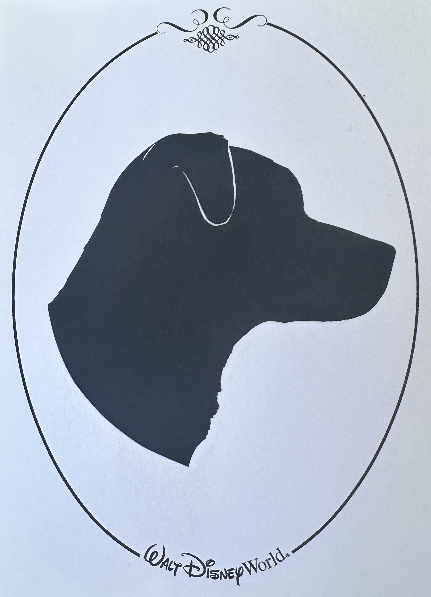

A Dog's Life
by: Lexi Nunnally
"Until one has loved an animal, a part of one's soul remains unawakened."-Anatole France
Welcome to the world of my sweet boys. When creating projects
for school, I've always looked to my dogs as inspiration, and
this project is no different. On this website, you'll be able to
read the journey across the galaxy of my three dogs Vader, Solo, and Obi.
Introductions
- Vader
- 14 year old Black Pug
- One eye and nearly deaf
- Grumpy old man
- Loves food
- Solo
- 5 year old Lab/Pointer Mix
- Anxiety filled loaf of love
- Hates people/other dogs he doesn't know
- Bottomless pit for food
- Obi
- 3 year old Mutt
- We call him a Shepitdoodle (Aussie, Pitbull, Poodle)
Steals things he shouldn't haveAn absolute angel, the sweetest boy ever- Best cuddle buddy

Venture throughout these boy's stories from their perspectives.
Vader's Blog
Solo's Blog
Obi's Blog
Contact Us